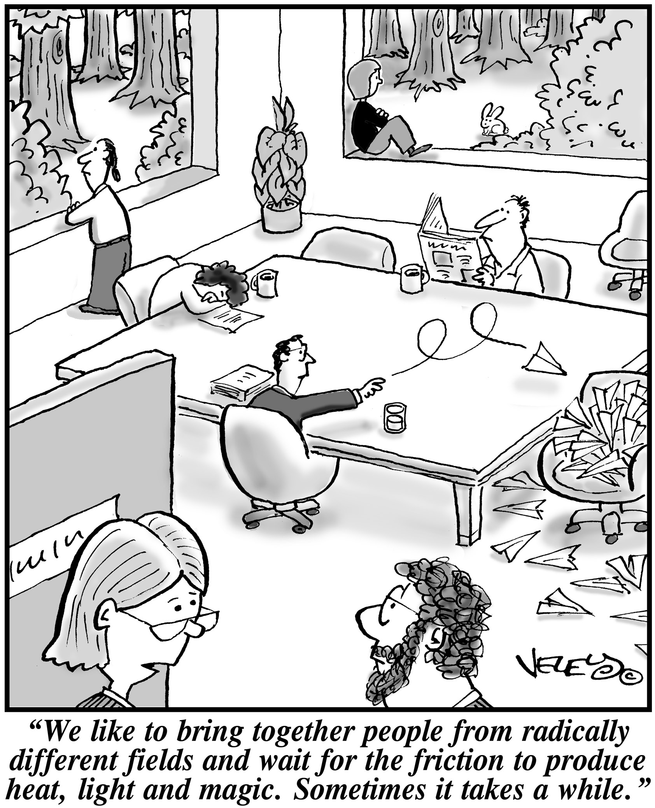
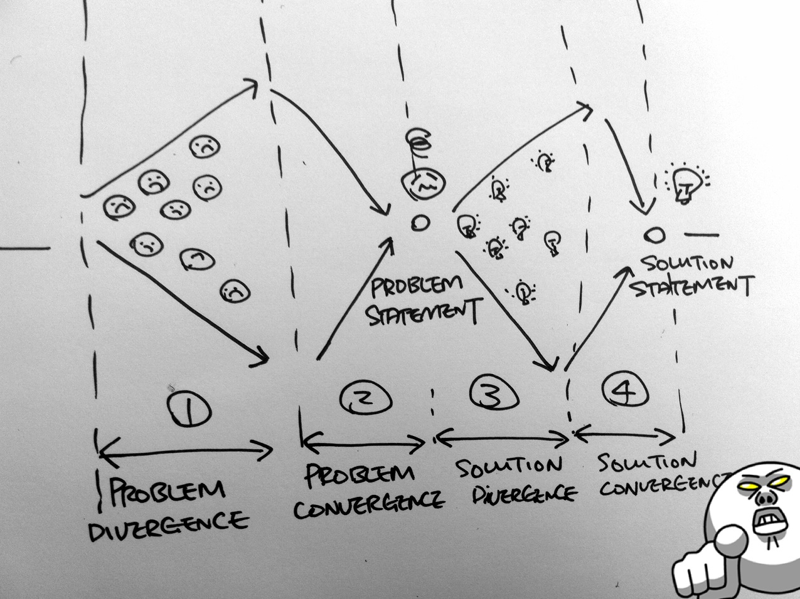

当我说“对交付负责”的时候，就一定是要对交付负责。首先要明白的是，这个世界上有太多对交付不负责的设计，它们广泛存在于各种PPT或者PSD文档中，它们的自我标榜，是感官的美，且不谈逻辑的正确，连情感都是空洞的，而最致命的是，在那些高光渐变材质光晕的炫耀下，是一个不知所措的承诺。
你得承认，这世界上很多人听不懂我们的语言。业务专注商业价值、设计专注深入人心、技术专注维护运营——商业到设计，设计通过技术实现，最终反馈为商业价值的过程，不是由其中的任意一方决定，而更多是妥协。
因此，一个“对交付负责”的设计永远应该是“妥协”的艺术：
在足够吸引客户的同时、利用合理的技术成本、实现合理的商业价值。
而“妥协”基于的，不是行政命令、不是政治地位、更不是音量，而应该是基于策略、可被设计的过程，而这才是设计师最应该体现价值的地方，若是以“你根本难以窒息无法理解的美”去实现这种“妥协”，最终的结果通常是草草收场。
这就是用心规划一个设计项目的目的——妥协。用方法、引导、工具、互动、策略去实现妥协。
价值观
价值观帮助我们在决策时，基于一定的认知基础，从而避免一些原则性的问题。我们希望参与我们设计项目的人都抱以以下价值观：
设计过程胜于设计结果
让不同领域的人参与的过程胜于最终的设计结果，过程的参与度决定了对设计结果认同的一致性，我们希望避免忽视过程而用一个“伟大”的设计结果获得一致。
正确问题胜于正确答案
问正确的问题，而不是急于获得正确答案，拥有将解决方案放在次要位置，避免还没有对设计将解决什么问题达成一致，就进入解决方案的讨论。
协作互动胜于权威经验
权威经验应该是保险绳而非助推器，好的协作和互动是达成一致最好的方式，避免一味追求效率而使用权威决断。
直接体验胜于视觉表现
尽可能早的产出直接的设计体验，而非基于平面的、毫无内涵的视觉表现，所有的活动都应该基于尽早产出直接体验为目标，尽早验证。
概念模型
设计过程中最大的两个问题是：发散过甚和收敛过快。缺乏有效的引导工具和手段，传统意义上的头脑风暴变成毫无章法的胡思乱想。因为发散的失败，一般情况下，我们就会尝试用一种武断的方式停止这种失败的发散，依据每个企业话语权重的不同则体现在：
- 业务导向：产品经理用经验和行政地位决断；
- 设计导向：设计师用完美作品决断；
- 技术导向：技术人员用技术限制决断；
发散过甚收不回来和收敛过快草草收场，非此即彼。
任何一种决断虽然带来了效率的提升，负面效应也显而易见：
- 业务导向：设计师完全成为产品经理的执行者，设计和产品策略脱节；技术人员缺乏上下文，只根据设计进行开发，产品实现往往和设计脱节；
- 设计导向：产品缺乏商业价值、无法运营或运营成本过高；技术成本过高，产品上线不断延期。
- 技术导向：产品缺乏商业价值；按照后台系统的思路做消费级产品，缺乏创新和突破。

所处情境和关注点的不同，不同导向的人们难以达成有效的一致，往往貌合神离。
这就是我们尝试解决的问题，用好的发散方法避免武断的收敛，用好的收敛方法让各方都达成一致性的“妥协”。
问题（Problem）和方案（Solution）永远是设计的“双生”，往往发散失控最容易发生的地方在于对方案无休止的讨论——人对于未来和未知往往过度兴奋——而对于现在的事实，人们却缺乏兴趣。
双菱形（Duo-diamond）结构的存在，便是让我们的设计项目存在两个重要节点“问题”和“方案”。

双菱形的结构保证设计项目有足够广度的发散，足够明智的收敛。
整个规划的核心是保证：
- 对“问题”有充分的事实了解，即发散，同时在进入解决方案讨论前，对“问题”有明确的定义，即收敛；
- 对“方案”有充分的创意过程，即发散，同时在进入细节设计讨论前，对“方案”有明确的描绘，即收敛。
因此，“问题发散（Problem Divergence）”、“问题收敛（Problem Convergence）”、“方案发散（Solution Divergence）”、和“方案收敛（Solution Convergence）”就是双菱形结构中重要的四个部分，我们所有的规划都是基于合理配置活动去支持这四个部分的设计过程。
这便是一个对交付负责的前期设计项目所需要做到的项目规划。